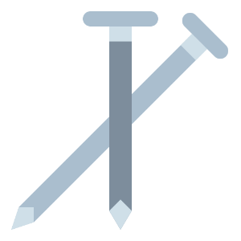
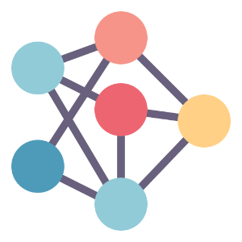

Projects
If you are interested in joining a project, please use the accepting collaborators category to view those projects. Other projects are either ongoing but not accepting collaborators, working publishing the final manuscript, or published. Other category labels are used to help you discover projects related to a specific topic.
-

PSA001: Face Perception
Over the past 10 years, Oosterhof and Todorov’s valence–dominance model has emerged as the most prominent account of how people evaluate faces on social dimensions. In this model, two dimensions (valence and dominance) underpin social judgements of faces. Because this model has primarily been developed and tested in Western regions, it is unclear whether these findings apply to other regions. We addressed this question by replicating Oosterhof and Todorov’s methodology across 11 world regions, 41 countries and 11,570 participants. When we used Oosterhof and Todorov’s original analysis strategy, the valence–dominance model generalized across regions. When we used an alternative methodology to allow for correlated dimensions, we observed much less generalization. Collectively, these results suggest that, while the valence–dominance model generalizes very well across regions when dimensions are forced to be orthogonal, regional differences are revealed when we use different extraction methods and correlate and rotate the dimension reduction solution.
-

PSA002: Object Orientation
Mental simulation theories of language comprehension propose that people automatically create mental representations of real objects. Evidence from sentence-picture verification tasks has shown that people mentally represent various visual properties such as shape, color, and size. However, the evidence for mental simulations of object orientation is limited. We report a study that investigates the match advantage of object orientation across speakers of different languages. This multi-laboratory project aims to achieve two objectives. First, we examine the replicability of the match advantage of object orientation across multiple languages and laboratories. Second, we will use a mental rotation task to measure participants’ mental imagery after the sentence-picture verification task. The relationship between the participants’ performance of the two tasks will provide a cross-linguistic examination of perceptual simulation processes. With the (broad) evaluation of individual mental imagery ability and potential linguistic moderators, we expect a robust estimation of match advantage of object orientation.
-
PSA003: Gendered Prejudice
When asked to imagine a person, people tend to think of a man (Hamilton, 1991). The same is true for some social groups as well–when asked to imagine a Black or White person, people tend to imagine a Black or White man (Schug, Alt, & Klauer, 2015). One reason for this is androcentrism: the belief that men are the default and women are the exception or “other” (Bailey, LaFrance, & Dovidio, 2018; Bem, 1993; Smith & Zarate, 1992).The present research will describe the gendered nature of prejudice for seven social categories (i.e., Black people, East Asian people, White people, police, politicians, and criminals). We hypothesized that, if prejudice occurs for the group, it is more strongly related to prejudice toward the men of that social category than toward the women of that category. This study was conducted across several laboratories and languages and was paired with PSA 002 for data collection.
-
PSA004: True Belief
According to the Justified True Belief account of knowledge (JTB), a person can only truly know something if they have a belief that is both justified and true (i.e., knowledge is justified true belief). This account was challenged by Gettier (1963), who argued that JTB does not explain knowledge attributions in certain situations, later called Gettier-type cases, wherein a protagonist is justified in believing something to be true but their belief was only correct due to luck. Lay people may not attribute knowledge to protagonists with justified but only luckily true beliefs. While some research has found evidence for these so-called Gettier intuitions (e.g., Machery et al., 2017a), Turri et al. (2015) found that participants attributed knowledge in Gettier-type cases at rates similar to cases of justified true belief. In a large-scale, cross-cultural conceptual replication of Turri and colleagues’ (2015) Experiment 1 (N = 4724), we failed to replicate this null result using a within-subjects design and three vignettes across 19 geopolitical regions. Instead, participants demonstrated Gettier intuitions; they were 1.86 times more likely to attribute knowledge to protagonists in standard cases of justified true belief than to protagonists in Gettier-type cases. These results suggest that Gettier intuitions may be common across different scenarios and cultural contexts. When assessing the knowledge of others, lay people may rely on a shared set of epistemic intuitions (i.e., a core folk epistemology) that requires more than simply justification, belief, and truth. However, the size of the Gettier intuition effect did vary by vignette, and the Turri et al. (2015) vignette produced the smallest effect. Thus, epistemic intuitions may also depend on contextual factors unrelated to the criteria of knowledge, such as the characteristics of the protagonist being evaluated.
-
PSA005: Stereotype Threat
According to stereotype threat theory, the possibility of confirming a negative group stereotype evokes feelings of threat, leading people to underperform in domains where they are stereotyped as lacking ability. This theory has immense theoretical and practical implications. However, many studies supporting it include small samples and varying operational definitions of “stereotype threat”. We address the first challenge by leveraging a network of psychology labs to recruit a large Black student sample (*N~anticipated~* = 2700) from multiple US sites (*N~anticipated~* = 27). We address the second challenge by identifying three threat-increasing and three threat-decreasing procedures that could plausibly affect performance and use an adaptive Bayesian design to determine which operationalization yields the strongest evidence for underperformance. This project should advance our knowledge of a scientifically and socially important topic: the conditions under which stereotype threat affects performance among current Black students in the United States.
-
PSA006: Trolley Problem
The study of moral judgements often centres on moral dilemmas in which options consistent with deontological perspectives (that is, emphasizing rules, individual rights and duties) are in conflict with options consistent with utilitarian judgements (that is, following the greater good based on consequences). Greene et al. (2009) showed that psychological and situational factors (for example, the intent of the agent or the presence of physical contact between the agent and the victim) can play an important role in moral dilemma judgements (for example, the trolley problem). Our knowledge is limited concerning both the universality of these effects outside the United States and the impact of culture on the situational and psychological factors affecting moral judgements. Thus, we empirically tested the universality of the effects of intent and personal force on moral dilemma judgements by replicating the experiments of Greene et al. in 45 countries from all inhabited continents. We found that personal force and its interaction with intention exert influence on moral judgements in the US and Western cultural clusters, replicating and expanding the original findings. Moreover, the personal force effect was present in all cultural clusters, suggesting it is culturally universal. The evidence for the cultural universality of the interaction effect was inconclusive in the Eastern and Southern cultural clusters (depending on exclusion criteria). We found no strong association between collectivism/individualism and moral dilemma judgements.
-

PSA007: SPAM-L
Semantic priming has been studied for nearly 50 years across various experimental manipulations and theoretical frameworks. These studies provide insight into the cognitive underpinnings of semantic representations in both healthy and clinical populations; however, they have suffered from several issues including generally low sample sizes and a lack of diversity in linguistic implementations. Here, we will test the size and the variability of the semantic priming effect across ten languages by creating a large database of semantic priming values, based on an adaptive sampling procedure. Differences in response latencies between related word-pair conditions and unrelated word-pair conditions (i.e., difference score confidence interval is greater than zero) will allow quantifying evidence for semantic priming, whereas improvements in model fit with the addition of a random intercept for language will provide support for variability in semantic priming across languages.
-
PSA008: Minimal Groups
Biases in favor of culturally prevalent social ingroups are ubiquitous, but random assignment to arbitrary experimentally created social groups is also sufficient to create ingroup biases (i.e., the minimal group effect; MGE). The extent to which ingroup bias arises from specific social contexts versus more general psychological tendencies remains unclear. This registered report focuses on three questions. First, how culturally prevalent is the MGE? Second, how do critical cultural and individual factors moderate its strength? Third, does the MGE meaningfully relate to culturally salient real-world ingroup biases? We compare the MGE to bias in favor of a family member (first cousin) and a national ingroup member. We propose to recruit a sample of more than 200 participants in each of more than 50 nations to examine these questions and advance our understanding of the psychological foundations and cultural prevalence of ingroup bias.
-

PSA009: Gendered Leader
Women are greatly underrepresented in positions of political leadership around the world. In seeking to explain this underrepresentation, some researchers have pointed to people’s tendencies to stereotype leaders as more similar to men than women as these tendencies can support the belief that women are unsuited to leadership. This project aims to test whether a subtle linguistic intervention is able to ameliorate this gender bias in political leadership stereotypes across different languages and national contexts (minimum anticipated N country = 15, N sample = 3,600). Specifically, this project will examine whether gender fair language (e.g., the use of paired pronouns ‘he or she’) can reduce the tendency for people to stereotype political leaders as more similar to men than women. To increase the rigor with which these stereotypes are measured, this project will complement the dominant ‘cheap talk’ measure of stereotype content with a novel incentivised measure of this content. This project will support an understanding of the capacity for gender fair language interventions to shift gender bias in the political leadership domain in different regions of the world.
-
PSA-JTF1: Moral Experiences
Do people in different societies experience morality differently in everyday life? Using experience sampling methods, we investigate everyday moral experiences in a sample from 20 countries across 6 continents, thereby replicating and extending a large-scale study originally conducted in the United States and Canada. We aim to replicate key findings about the kinds of moral experiences people have, the relationship between such experiences and religious or political affiliation, how such experiences affect momentary feelings, and how such experiences influence moral behavior. An international sample enables us to assess the generalizability of these findings across different socio-cultural contexts.
-
PSA-JTF2: Dignity Honor Face
Cultural logic is a set of cultural scripts and patterns organized around a central theme. The cultural logics of dignity, honor, and face describe different ways of evaluating a person’s worth and maintaining cooperation. These cultural logics vary in prevalence across cultures. In this study, we collaboratively develop and validate a measure capturing these cultural logics, which will allow us to map world cultures based on the prevalence of these logics. We will further explore the interrelations of dignity, honor, and face with prosocial behavior, values, moral beliefs, and religiosity as well as examine the generalizability of these relationships across cultures. Finally, we will explore historical antecedents (e.g., resource scarcity) and current correlates (e.g., inequality) of the country-level prevalence of these cultural logics. This study will generate a new dataset of country scores for dignity, honor, and face that will be available for future comparative research. It will also provide theoretical insights for researchers and practitioners interested in cooperation and social behavior within and between cultures.
-
PSA-JTF3: Error Correction
Intuition often guides our thinking effectively, but it can also lead to consequential reasoning errors, underpinning poor decisions and biased judgments. Little is known about how people globally self-correct such intuitive reasoning errors and what enhances their correction. Defying prevailing models of reasoning, recent research suggests that people spontaneously correct only a few errors during deliberation; however, enhancing error monitoring and motivating further effort should increase error correction. Here, we study whether these mechanisms apply to reasoning across individualistic and collectivistic cultures (expected N = 33,000 participants from 67 regions). Participants will solve problems that elicit incorrect intuitions twice: first intuitively and then reflectively, allowing them to correct initial errors, in a 2 (feedback: absent vs present) × 2 (answer justification: absent vs present) between-participants design. The study will shed more light on the nature, generalisability, and promotion of corrective behaviour, crucial for understanding and improving reasoning worldwide.
-
PSA-CR 001: Loss Gain
The COVID-19 pandemic presents a critical need to identify best practices for communicating health information to the global public. It also provides an opportunity to test theories about risk communication. As part of a larger Psychological Science Accelerator COVID-19 Rapid Project, a global consortium of researchers will experimentally test competing hypotheses regarding the effects of framing messages in terms of losses versus gains. We will examine effects on three primary outcomes: intentions to adhere to policies designed to prevent the spread of COVID-19, opinions about such policies, and the likelihood that participants seek additional policy information. Whereas research on negativity bias and loss aversion predicts that loss-framing will have greater impact, research on encouraging the adoption of protective health behaviour suggests the opposite (i.e., gain-framing will be more persuasive). We will also assess effects on experienced anxiety. Given the potentially low cost and the scalable nature of framing interventions, results could be valuable to health organizations, policymakers, and news sources globally.
-
PSA-CR 002: Cognitive Reappraisal
The COVID-19 pandemic has increased negative emotions and decreased positive emotions globally. Left unchecked, these emotional changes might have a wide array of adverse impacts. To reduce negative emotions and increase positive emotions, we tested the effectiveness of reappraisal, an emotion-regulation strategy that modifies how one thinks about a situation. Participants from 87 countries and regions (*n* = 21,644) were randomly assigned to one of two brief reappraisal interventions (reconstrual or repurposing) or one of two control conditions (active or passive). Results revealed that both reappraisal interventions (vesus both control conditions) consistently reduced negative emotions and increased positive emotions across different measures. Reconstrual and repurposing interventions had similar effects. Importantly, planned exploratory analyses indicated that reappraisal interventions did not reduce intentions to practice preventive health behaviours. The findings demonstrate the viability of creating scalable, low-cost interventions for use around the world.
-
PSA-CR 003: Self Determination
In order to slow the transmission of COVID-19, governments around the world are asking their citizens to participate in social distancing, that is, to stay at home as much as possible. In most countries, individuals have some choice over whether or not they follow recommendations for social distancing. Thus, understanding how to best motivate social distancing has become a critical public health priority. This study tests, in a confirmatory manner, whether self-determination theory-guided message framing impacts people’s motivation to participate in social distancing. Specifically, we expect autonomy-supportive messages that help people understand the value of behavior change to a) increase ‘buy in’, or autonomous motivation, for social distancing, b) lower feelings of defiance to follow recommendations around social distancing, and c) increase feelings of self-efficacy to participate in social distancing, relative to neutral and controlling messages. Further, we expect controlling messages that pressure people to change using shame, guilt, and threats, may backfire and a) decrease ‘buy in’ for social distancing and b) increase defiance, relative to the control condition. Exploratory tests will examine whether the effects of message framing on motivation and defiance extend to behavioral intentions and long-term commitment. This work has direct relevance for how public officials, health professionals, journalists, and others can communicate about solving this and future public health crises in ways that motivate people more effectively.